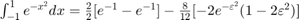
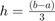
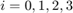
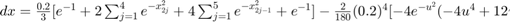

PRÁCTICA 04. Convolución y correlación
Contents
Integrantes
- Cuevas Morales Saúl Asís
- Gonzalez Zúñiga Alexis Bryan
- Méndez Pallares Josué
- Vallejo Camarillo Moisés Eduardo
Objetivos
- Conocer métodos básicos de integración numérica.
- Manipulación de instrucciones en MATLAB.
- Simular convoluciones y correlaciones de señales continuas.
- Simular convoluciones y correlaciones de señales discretas.
Introducción
INTERGACIÓN NUMÉRICA.
Como ya se sabe se usa el método de integración para poder determinar el área que se encuentra encerrada entre la curva de una función y dos puntos en el eje de las x.
Para poder determinar el valor de la integral se debe de cumplir con el teorema fundamental del cálculo:
Si f es integrable y  entonces:
entonces:
A veces se presentan casos en los que la integral es muy difícil o incluso imposible de calcular y en estos casos se utilizan las técnicas de integración para poder determinar su resultado. Un consejo para cuando no se pueda encontrar el área bajo la curva es no enfocarse tanto en la integral si no en el problema mismo y ver que se puede colocar un polígono para poder tener un área aproximada a la deseada.
En el ejemplo se tiene la función y evaluada entre 1 y -1, asi que se dibuja un rectángulo de 2x1 para si poder determinar un área aproximada que en este caso vemos que el área deseada es menor a 2.
FUNCIONES DE NEWTON-COTES
Este se basa en que la función puede ser derivado un numero de veces y su derivda es continua y con la teoría de lagrange se puede deducir que:
Formulas usadas en estas funciones:
Siendo n el grado del polinomio deseado.
REGLA DEL TRAPECIO
En esta regla se considera n=1 y se sustituyen los datos en la siguiente formula:
donde  es un número que se encuentra entre y . Esta formula solamente utiliza solo dos puntos los cuales serian el inicial y el final además de la derivada de la función a integrar.
es un número que se encuentra entre y . Esta formula solamente utiliza solo dos puntos los cuales serian el inicial y el final además de la derivada de la función a integrar.
En el ejemplo de se sustituyen los datos de:
Por lo tanto:
Quedando:

en
en
REGLA DE SIMPSON
En esta regla se considera a n=2 y se obtienen los siguientes datos:
y la siguiente fórmula:
Y como en el caso anterior el es un numero entre el número inicial y el final. Nótese que a diferencia del caso anterior en este se usa una cuarta derivada.
Ahora tratando de resolver el problema de se tienen los siguientes datos:
y sustituyéndolos en la fórmula:
![$\int_{-1}^{1}e^{-x^{2}}dx=\frac{1}{3}[e^{-1}+4e^{0}+e^{-1}]-\frac{1}{90}[-4e^{-\varepsilon^{2}}(-4\varepsilon^{4}+12\varepsilon^{2}-3)]$](ASySPrac04MendezJosue_eq02536177758462629702.png)
en
REGLA DE 3/8 DE SIMPSON
En esta regla se considera a n=3 y por lo tanto se consiguen los siguientes datos:


y la siguiente fórmula:
Y como en los casos anteriores el es un numero entre el numero inicial y el final.
Ahora tratando de resolver el problema de se tienen los siguientes datos:

Sustituyendo los datos en la fórmula se obtiene lo siguiente:
REGLA COMPUESTA DEl TRAPECIOS
Esta regla define la siguiente aproximación
Para que esto sea una igualdad se le agrega el factor de error para que quede de la siguiente manera:
donde u (a,b) y n es el número de intervalos
Además:
y  ; donde
; donde
Para resolver el problema de se tienen los siguientes datos:
n=10

y ; ; ; ... ;
Sustituyendo datos nos queda:
REGLA COMPUESTA DE SIMPSON
Esta regla define la siguiente aproximación
![$\int_{x_0}^{x_2}f(x)dx\approx \frac{h}{3}[f(x_0)+4f(x_1)+f(x_2)]$](ASySPrac04MendezJosue_eq15884151978610820859.png)
Para que esto sea una igualdad se le agrega el factor de error para que quede de la siguiente manera:
donde u (a,b) y n es el par número de intervalos
Además: (paso)
y ; donde
Para resolver el problema de se tienen los siguientes datos:
n=10
y ; ; ; ... ;
Sustituyendo datos nos queda:

donde
CUADRATURA GAUSSIANA
Esta regla define la siguiente aproximación
donde 2n son los parámetros.
Se usan polinomios de Legendre, en vex de polinomios de Lagrange; estos polinomios son polinomios que se ocupan en (-1,1).
Resultados de los polinomios de Legendre.
Si  es un polinomios de Legendre de grado n, sus raíces son reales y son (,$x_2$,...,$x_n$).
es un polinomios de Legendre de grado n, sus raíces son reales y son (,$x_2$,...,$x_n$).
Además:
Así que,
donde y P(x)es un polinomio de grado menor que 2n.
Ahora para resolver el problema de , se tiene que
; por lo tanto ![$x=\frac{1}{2}[(b-a)t+a+b]$](ASySPrac04MendezJosue_eq02761917166597877545.png)
Sustituyendo datos

Desarrollo
Problema 1. Para el PR04 reporte la grafica de la simulación númerica de la convolución y compare con el resultado análitico que obtuvo para el problema 1, esto es, su práctica tendrá que incluir una llamada a la funciónn convconm y posteriormente se tendrá que mostrar (mediante el Publish) la gráfica tanto de las señales involucradas como el resultado de la convolución, y en esta última gráficara su resultado analitico, se tendrá que incluir el resultado analitico.
x = @(t) exp(-t).*(t>=0&t<1); h = @(t) t.*(t>=-1&t<1); convconm(x,h)
Gif de la simulación:
https://josuemp01.github.io/ASySPrac04JosueMendez/P04_1.gif
{kind=link}
Problema 2. Para el PR05 reporte la grafica de la simulación númerica de la correalción y compare con el resultado análitico que obtuvo para el problema e), esto es, su práctica tendrá que incluir una llamada a la funciónn convconm y posteriormente se tendrá que mostrar (mediante el Publish) la gráfica tanto de las señales involucradas como el resultado de su correlación, y en esta última graficara su resultado analitico, se tendrá que incluir el resultado analitico.
x = @(t) heaviside(t) - 2*heaviside(t-3) + heaviside(t-4); h = @(t) x(-t); convconm(x,h)
Gif de la simulación:
https://josuemp01.github.io/ASySPrac04JosueMendez/P04_2.gif
{kind=link}
Problema 3. Realice la simuación de la convolución de las señales (c) con (d) del problema 3.1.1.
nc = -3:3; c = @(n) 3*n.*(n>=-3&n<=3); nd = -2:2; d = @(n) -2*n.*(n>=-2&n<=0) + 2*n.*(n>=0&n<=2); convdisc([nc;c(nc)],[nd;d(nd)])
Gif de la simulación:
https://josuemp01.github.io/ASySPrac04JosueMendez/P04_3.gif
{kind=link}
Problema 4. Realice la simulación de la correlación de las señales (c) con (d) del problema 3.1.1.
nc = -3:3; c = @(n) 3*n.*(n>=-3&n<=3); nd = -2:2; d = @(n) -2*n.*(n>=-2&n<=0) + 2*n.*(n>=0&n<=2); d1 = @(n) d(-n); convdisc([nc;c(nc)],[nd;d1(nd)])
Gif de la simulación:
https://josuemp01.github.io/ASySPrac04JosueMendez/P04_4.gif
{kind=link}
Problema 5. Realice la la convolución de las señales (c) con (d) del problema 3.1.1 utilizando el comando conv de MATLAB, muestre el código utilizado y gráfique el resultado, sugerencia: Utilice las propiedades de traslación de la convolución.
C=@(n) (3*n).*(n>=-3 & n<=3);
D=@(n) ((-2*n).*(n>=-2 & n<0))+((2*n).*(n>=0 & n<=2));
N=-6:1:6;
W=conv(C(N),D(-N),'same');
stem(N,W)
Apéndices
Código de función convconm.
function convconm(x,h) figure (1) % Se crea una figura para hacer las gráficas dtau = 0.005; % Base de los rectangulos para realizar la integral tau = -1:dtau:4; % Intervalo de visualización del resultado ti = 0; % Indice para el vector de resultados tvec = -.25:.1:3.75; % traslaciones de t, cuantas integrales se calulan y = NaN*zeros(1, length (tvec)); % Resultados de acuerdo a cuantos t for t = tvec, % Cantidad de traslaciones ti = ti+1; % Indice para guardar el resultado (indice del tiempo) xh = x(t-tau).*h(tau); % resultado de la multiplicación lxh = length(xh); % longitud del resultado y(ti) = sum(xh.*dtau); % Base por altura, aproximación de la integral subplot (2,1,1), % gráfica de 2 x 1 (primera) plot(tau, h(tau), 'r-', tau, x(t-tau), 'g--', t, 0, 'ob'); %graficas axis ([tau(1) tau(end) -2.0 2.5]); % límites de los ejes patch([tau(1:end-1); tau(1:end-1); tau(2:end); tau(2:end)],... [zeros(1,lxh-1);xh(1:end-1);xh(2:end);zeros(1,lxh-1)],... [.8 .8 .8], 'edgecolor', 'none'); xlabel('\tau'); % Texto del eje X legend('h(\tau)', 'x(t-\tau)','t','h(\tau)x(t-\tau)')% Caja de Texto subplot (2, 1, 2) % gráfica de 2 x 1 (segunda) plot (tvec, y, 'k', tvec (ti), y(ti), 'ok'); xlabel ('t'); ylabel ('y(t) = \int h(\tau)x(t-\tau) d\tau'); axis ([tau(1) tau(end) -1.0 2.0]); % límites del eje grid; % malla drawnow; % efecto de movimiento continuo end end
Código de función convdisc.
function convdisc(x1,x2) Tam1 = size(x1(1,:)); Tam2 = size(x2(1,:)); T1 = Tam1(2); T2 = Tam2(2); T3 = T1+T2-1; vec1 = zeros(1,T1+2*T2-2); vec2 = zeros(1,T1+2*T2-2); Tec2 = -(T2-1):(T1+T2-2); size(vec2); size(Tec2); zeros(2,T3); x3(1,:)=0:T3-1; x3(1,:)=x3(1,:)+x1(1,1)+x2(1,1); vec1(1,T2:T2+T1-1)=x1(2,:); figure (1) hFig = figure(1); set(hFig, 'Position', [0 0 1000 1000]) filename = 'testAnimated.gif'; ttt=1; for m=0:T1+T2-2 vec2(1,1+m:T2+m)=fliplr(x2(2,:)); x3(2,m+1)=sum(vec1.*vec2); subplot(4,1,4) stem(x3(1,:),x3(2,:),'r','LineWidth',3) axis([Tec2(1),T1+2*T2-2, min(x3(2,:))-1 max(x3(2,:))+1]) ylim('auto') ylabel('x_3[n]','FontWeight','bold','FontSize',16); xlabel('n','FontWeight','bold','FontSize',16); grid on subplot(4,1,1) stem(x2(1,:),x2(2,:),'k','LineWidth',3) ylabel('x_2[m]','FontWeight','bold','FontSize',16); xlabel('m','FontWeight','bold','FontSize',16); title('CONVOLUCIóN','FontWeight','bold','FontSize',16); grid on axis([Tec2(1),T1+2*T2-2, min(x2(2,:))-1 max(x2(2,:))+1]) ylim('auto') subplot(4,1,2) stem(x1(1,:),x1(2,:),'b','LineWidth',3) ylabel('x_1[m]','FontWeight','bold','FontSize',16); xlabel('m','FontWeight','bold','FontSize',16); grid on axis([Tec2(1),T1+2*T2-2, min(x1(2,:))-1 max(x1(2,:))+1]) ylim('auto') subplot(4,1,3) stem(Tec2,vec2(1,:),'g','LineWidth',3) axis([Tec2(1),T1+2*T2-2,min(vec2)-1, max(vec2)+1 ]) ylim('auto') ylabel('x_2[n-m]','FontWeight','bold','FontSize',16); xlabel('m','FontWeight','bold','FontSize',16); grid on drawnow; pause(0.4) vec2 = zeros(1,T1+2*T2-2); frame = getframe(hFig); im = frame2im(frame); [imind,cm] = rgb2ind(im,256); % Write to the GIF File if ttt == 1 imwrite(imind,cm,filename,'gif', 'Loopcount',inf); else imwrite(imind,cm,filename,'gif','WriteMode','append'); end ttt=ttt+1; end end
Referencias
- B. P. Lathi. (2005). Linear Systems and Signals. 198 Madison Avenue, New York, New York 10016: Oxford University Press.
- Martínez, R. [Mate y así] (2018, Abril 1). "Métodos numéricos: Teorema fundamental del Cálculo, Integración 1". Recuperado de: https://www.youtube.com/watch?v=OFHAN-WwLEw&list=PLSC7gO5dTNPewJkJ5Zh3Y7xHfy_fnDKqD&index=1
- Martínez, R. [Mate y así] (2018, Abril 1). "Métodos numéricos: Newton-Cotes, regla del trapecio, Integración 2". Recuperado de: https://www.youtube.com/watch?v=Fe79KWPf0Do&list=PLSC7gO5dTNPewJkJ5Zh3Y7xHfy_fnDKqD&index=2
- Martínez, R. [Mate y así] (2018, Abril 1). "Métodos numéricos: Newton-Cotes, regla de Simpson, regla de 3/8 de Simpson, Integración 3". Recuperado de: https://www.youtube.com/watch?v=Ykgdo9Sr354&list=PLSC7gO5dTNPewJkJ5Zh3Y7xHfy_fnDKqD&index=3
- Martínez, R. [Mate y así] (2018, Abril 1). "Métodos numéricos: regla del trapecio compuesta , regla de Simpson compuesta, Integración 4". Recuperado de: https://www.youtube.com/watch?v=UJMZviPb6GE&list=PLSC7gO5dTNPewJkJ5Zh3Y7xHfy_fnDKqD&index=4
- Martínez, R. [Mate y así] (2018, Abril 1). "Métodos numéricos: Cuadratura Gaussiana, Integración 5". Recuperado de: https://www.youtube.com/watch?v=6i4N328QbpY&list=PLSC7gO5dTNPewJkJ5Zh3Y7xHfy_fnDKqD&index=5